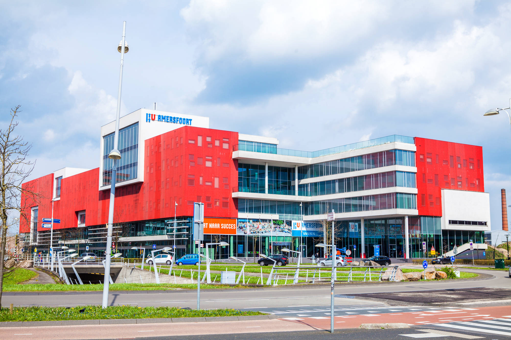
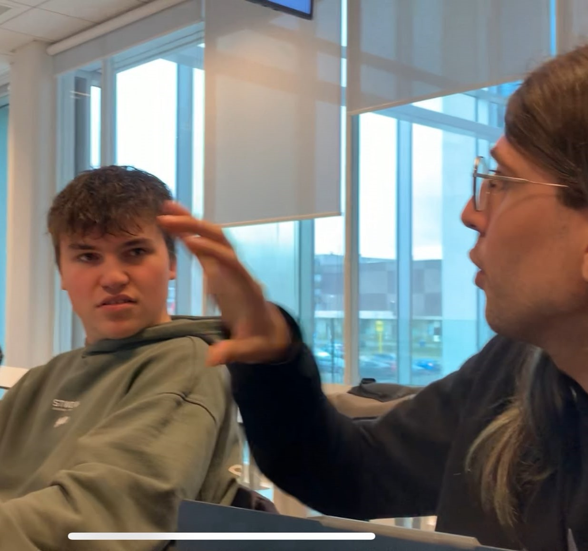

ACADEMIC WORK · 2024 – 2026
Projects from my Associate Degree in Digital Technology & Media
ABOUT THE WORK
During my Associate Degree in Digital Technology & Media at Hogeschool Utrecht, I worked on a wide variety of projects that helped me develop my skills across the entire production pipeline. From planning and filming to editing and post-production, each assignment pushed me to try new techniques and collaborate with fellow students.
Each project taught me something new, whether it was working with green screens, rotoscoping in Fusion, or planning a full TV show production. Each project also managed to help me realize some mistakes that I don’t make anymore, like unstable shots, bad lighting or terrible audio.
What I value most about these projects is the freedom to experiment and make mistakes. School gave me a safe space to try things I wouldn't have attempted on a client project, and those lessons have directly shaped the editor and creator I am today.
